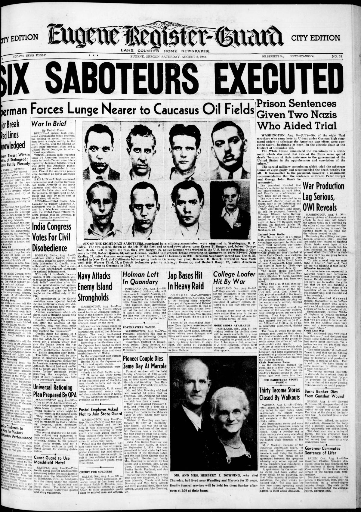
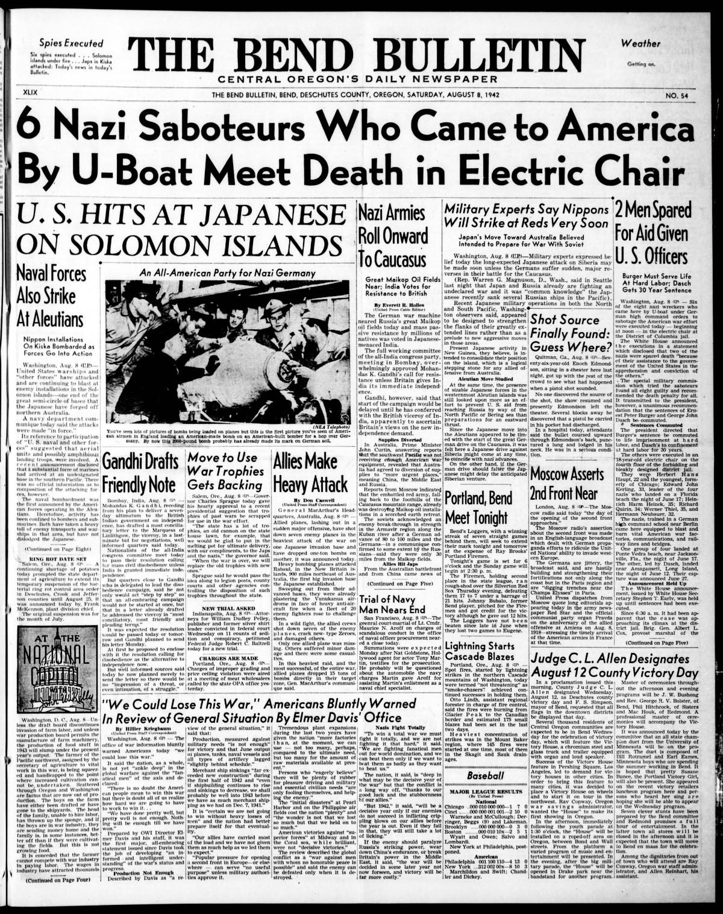

HN HN-534 · August 8, 1942 · Crime, Law & Justice > Executions, Sentencing & Wrongful Convictions > Capital punishment
Source: Indianapolis Times, p. 2 — original page; FBI, Operation Pastorius case.
Report: The paper described six executions after a military-commission trial; Ernst Burger received life imprisonment and George Dasch thirty years, and it reprinted a chronology of the landings and arrests.
Assessment: Six executed and two imprisoned is the documented sentence outcome, not a claim that all eight were killed or that their intended sabotage was carried out. The two surviving prisoners were subsequently repatriated after the war. See
Identity-review candidate peers: HN-533:Algorithmic
Authentic scans retrieved from Historic Oregon Newspapers (University of Oregon). Article crops are located using the archive's own ALTO OCR word coordinates and rendered at native crop resolution; page scans are 1,200-pixel-wide renditions. No images were generated, mocked, or retouched.


Not yet acquired. Queued for provider-specific acquisition testing (see source-acquisition manifest).
URL (preserved verbatim): https://newspapers.library.in.gov/?a=d&d=IPT19420808.1.2
Saved research report: Historical_Newspaper_Event_Research_528-552_2026-10-23.md
Evidence note: A newspaper report means a historical publication made a claim; it does not establish that claim as fact. Contemporary reporting is separated from later scholarly context and our own assessment.